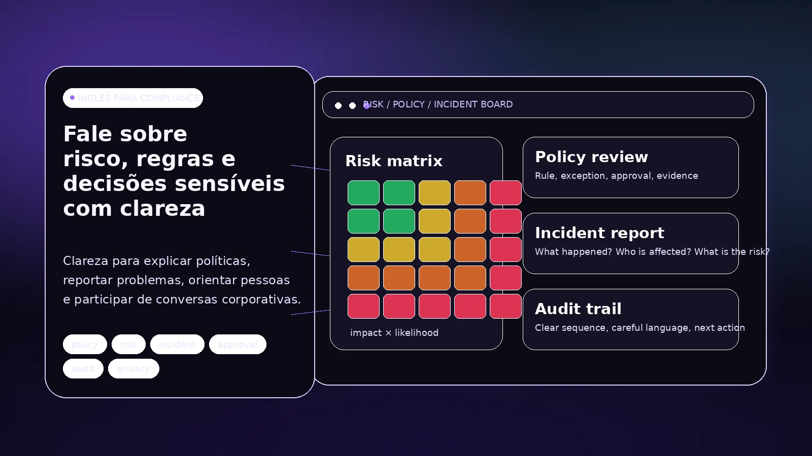

Políticas e regras
Vocabulário usado para explicar procedimentos, requisitos, aprovações e exceções.
As aulas continuam tendo o inglês como centro. Quando a rotina profissional exige vocabulário e situações específicas de compliance, risco, políticas ou comunicação corporativa, esse contexto pode entrar nas aulas.

Dependendo do trabalho do aluno, as aulas podem usar situações e vocabulário ligados a políticas internas, riscos, auditoria, documentação, orientações e reuniões.
Vocabulário usado para explicar procedimentos, requisitos, aprovações e exceções.
Linguagem usada para descrever problemas, evidências, impactos e próximos passos.
Prática de compreensão e produção em conversas profissionais quando o nível do aluno permite.
Contato com textos, termos e situações da área quando isso ajuda o desenvolvimento do inglês.
Se o aluno ainda está construindo inglês, o ensino regular vem primeiro. À medida que a base aumenta, o contexto profissional pode aparecer com mais profundidade.
Quando usamos materiais ligados ao contexto profissional, eles podem ser publicados no Portal junto com atividades e outros recursos do aluno.

O contexto profissional entra na medida em que ele ajuda o aluno a usar inglês no trabalho.
Não. O foco é inglês. Compliance entra como contexto e vocabulário quando isso faz parte da necessidade do aluno.
Não. O ensino regular atende desde o iniciante. A modalidade conversacional é oferecida a partir do B1.
Não. O peso do inglês específico depende do que realmente for útil para o seu desenvolvimento.
Você pode comparar primeiro os formatos e mensalidades ou falar comigo diretamente. Por e-mail: marcosvinifs@gmail.com.